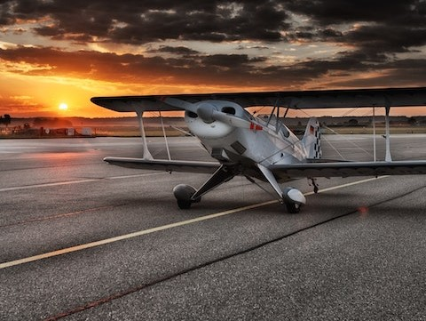
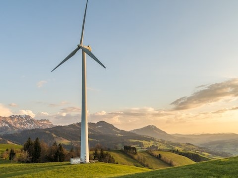
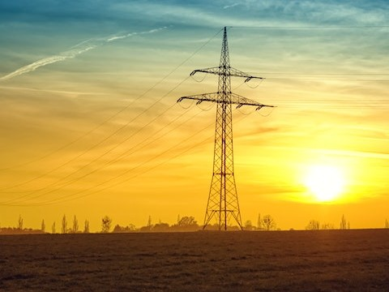
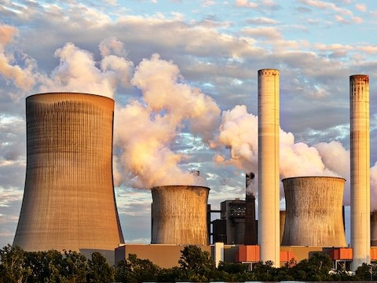
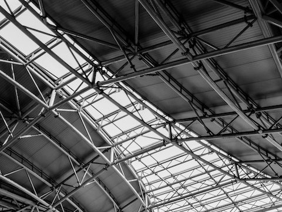

Drone inspection and monitoring is a game-changing technology that provides unparalleled access to hard-to-reach and hazardous areas. With a drone, you can easily inspect infrastructure, monitor equipment, and survey large areas from a safe and efficient distance, minimizing the risk of injury and reducing the cost of inspections.
Whether you're inspecting a building, a bridge, or an industrial plant, a drone can provide highly detailed and accurate imagery that allows you to identify potential issues and address them before they become major problems. This not only ensures the safety and integrity of your infrastructure but also saves you time and money in the long run.
Moreover, drones equipped with sensors and cameras can monitor environmental factors such as air quality, water levels, and wildlife populations, making them an essential tool for environmental monitoring and conservation efforts. With their ability to cover large areas quickly and efficiently, drones provide a cost-effective and accurate way to track changes in the natural world and respond to environmental challenges.
Investing in a drone for inspection and monitoring is a smart decision that offers a safer, more efficient, and cost-effective way to maintain infrastructure and monitor the environment. So why wait? Take advantage of this revolutionary technology and enhance your inspection and monitoring capabilities today.

Drone inspection and monitoring is used in the aviation industry to inspect and maintain aircraft, runways, and other aviation infrastructure. By using drones equipped with high-resolution cameras and sensors, inspectors and maintenance crews can capture detailed imagery and data of aircraft and structures, allowing for more efficient and effective inspections.

Drone inspection and monitoring is used in the wind energy industry to inspect and maintain wind turbines. By using drones equipped with high-resolution cameras and sensors, technicians can capture detailed imagery and data of wind turbines and their components, allowing for more efficient and effective inspections. Drones can access hard-to-reach areas that would otherwise require costly and time-consuming manual inspections.

Drone inspection and monitoring is used in the power industry to inspect and maintain power lines. By using drones equipped with high-resolution cameras and LiDAR sensors, technicians can capture detailed imagery and data of power lines and their components, allowing for more efficient and effective inspections. Drones can access hard-to-reach areas that would otherwise require costly and time-consuming manual inspections, improving worker safety.

Drone inspection and monitoring is used to measure air pollution levels in urban and industrial areas. Drones equipped with air quality sensors can fly at low altitudes and collect real-time data on the concentration of various air pollutants, such as nitrogen dioxide, sulfur dioxide, and particulate matter. This information can be used to create detailed pollution maps of an area, allowing policymakers to identify pollution hotspots and develop targeted mitigation strategies.
Drone inspection and monitoring is used for crowd monitoring in events, concerts, and public gatherings. Drones equipped with high-resolution cameras can capture real-time images and video footage of crowds, allowing for better situational awareness and early detection of potential safety issues. This technology can also be used to track the movement of crowds and provide insights into crowd behavior, helping event organizers to optimize crowd management and security measures.

Drone inspection is used for roofing inspection in the construction and maintenance industry. Drones equipped with high-resolution cameras can capture detailed imagery and data of roofs, allowing for more efficient and effective inspections. Drones can access hard-to-reach areas that would otherwise require costly and time-consuming manual inspections, improving worker safety.